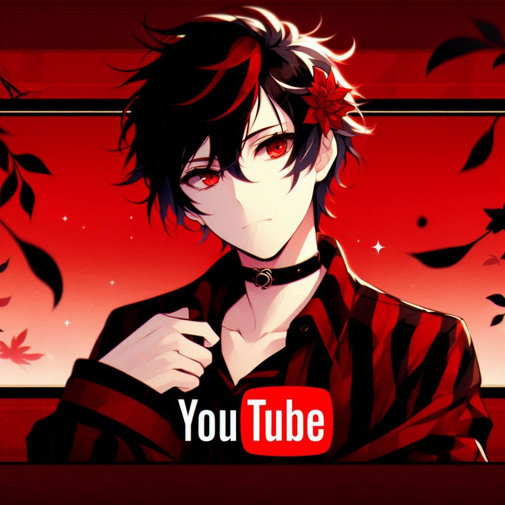

Coisas sobre mim do canal oficial do youtube Davizin Games
Quem sou eu?
ola eu sou o Davi e eu tive a ideia de criar esse canal para jogar,falar e as vezes alguns tutoriais sobre jogos,e nesse canal vc encontrara videos dos sequintes jogos:moto whellie 3D,super Mario , super bear adventure e minecraft.
E eu tenho 11 anos curto jogos,cubos magicos,minha cor favorita e vermelho e preto.E meu nome e davi mas pode me chamar de Davizin.......................... (lembrando que esse e o meu primeiro site por isso n e tao bom!)